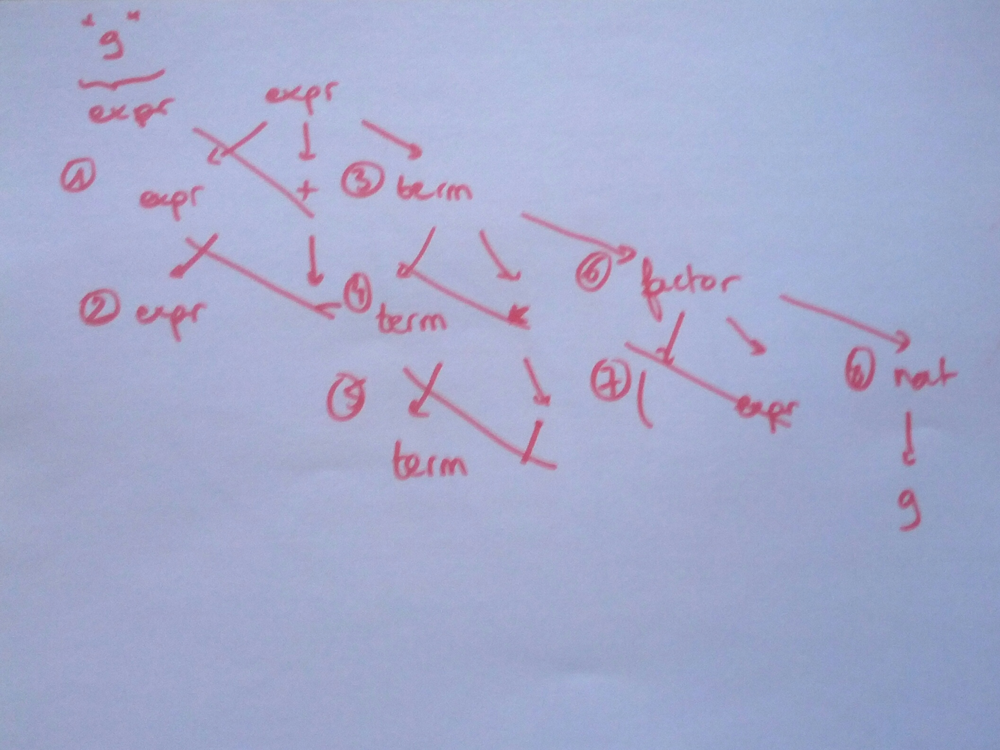
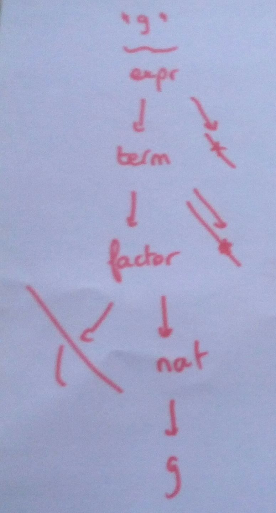

Here is the second part of the exercises from the chapter 8. For the first part, go here.
Explain why the final simplification of the grammar for arithmetic expressions has a dramatic effect on the efficiency of the resulting parser.
Hint: Begin by considering how an expression comprising a single number would be parsed if this step had not been made.
We will try and parse a string with only one number to parse, "9" for example.
With this grammar:
expr ::= expr + expr | expr - expr | term term ::= term * term | term / term | factor factor ::= (expr) | nat nat ::= 0 | 1 | ... |
The resulting parsing with the tryout and failures is:

For each step, recognise the right term in the grammar, will parse and fail each possible definition until finding the rightmost (and rightful) definition:
expr + expr, same with expr - expr, trying and succeed term
term * term, same with term / term, trying and succeed factor
(expr), trying and succeed nat
With this factorised grammar:
expr ::= term (+ expr | - expr | epsilon) term ::= factor (* term | / term | epsilon) factor ::= (expr) | nat nat ::= 0 | 1 | ... |
The resulting parsing tree is a lot smaller because of less tryout and failtures:

For each step, we try to parse right term in grammar, then the next symbol and fail, thus the first term parsed is the right one, no need to continue.
So with the first grammar, the efficiency of parsing will be proportional on the expression's size. With the second left-factorized grammar, the parsing is reduced.
Extend the parser for arithmetic expressions to support subtraction and division, based upon the following extensions to the grammar:
Grammar:
expr ::= term (+ expr | − expr | epsilon) term ::= factor (∗ term | / term | epsilon)
Implementation:
expr :: Parser Int expr = do t <- term do symbol "+" e <- expr return (t + e) +++ do symbol "-" e <- expr return (t - e) +++ return t term :: Parser Int term = do f <- factor do symbol "*" t <- term return (t * f) +++ do symbol "/" t <- term return (t `div` f) +++ return f
Examples:
*Parsers> eval "1+2/3" 2 *Parsers> eval "(1+2)/3" 1 *Parsers> eval "1+(2/3)" 2 *Parsers> eval "1+(2*3)" 7 *Parsers> eval "1+2*3" 7 *Parsers> eval "1+2*3-3" 4 *Parsers> eval "1+2/3-3" -1
Further extend the grammar and parser for arithmetic expressions to support exponentiation, which is assumed to associate to the right and have higher priority than multiplication and division, but lower priority than parentheses and numbers. For example,
2 ↑ 3 ∗ 4means(2 ↑ 3) ∗ 4.Hint: The new level of priority requires a new rule in the grammar.
Remark: The grammar's operator precedence follows the declaration order.
As:
Here is the result:
expr ::= term (+ expr | - expr | epsilon) term ::= factor (* term | / term | epsilon) factor ::= exp (^ factor | epsilon) exp ::= (expr) | nat nat ::= 0 | 1 | ... |
factor :: Parser Int factor = do e <- expo do symbol "^" f <- factor return (e ^ f) +++ return e expo :: Parser Int expo = do symbol "(" e <- expr symbol ")" return e +++ natural
Examples:
*Parsers> eval "2^3*4" 32 *Parsers> eval "(2^3)*4" 32 *Parsers> eval "2^(3*4)" 4096
Consider expressions built up from natural numbers using a subtraction operator that is assumed to associate to the left.
Define a natural grammar for such expressions.
expr ::= expr - nat | nat nat ::= 0 | 1 | ...
Translate this grammar into a parser expr :: Parser Int.
expr :: Parser Int expr = do e <- expr symbol "-" n <- natural return (e - n) +++ natural
What is the problem with this parser?
It loops until the stack blows.
*Parsers> parse expr "1-2" ***Exception: stack overflow
Show how it can be fixed.
Hint: Rewrite the parser using the repetition primitive
manyand the library function foldl.
Here is the remainder of the many parser, for a more exhaustive list, see the previous article:
many :: Parser a -> Parser [a] many p = many1 p +++ return [] many1 :: Parser a -> Parser [a] many1 p = do v <- p vs <- many p return (v:vs)
Simply stated:
natural
- followed by a natural, we extract those values as list
foldl with n as accumulator and ns as list and inject it into the world of parser via the return call.
expr :: Parser Int expr = do n <- natural ns <- many (do symbol "-" natural) return (foldl (-) n ns)
Examples:
*Parsers> parse expr "1-2" [(-1,"")] *Parsers> parse expr "1-2-3" [(-4,"")] *Parsers> parse expr "1-2-3-5" [(-9,"")] *Parsers> parse expr "1-2-3-506" [(-510,"")]